| 日付 | 2013年11月2日（土） |
|---|---|
| 山域 | 箱根 |
| メンバー | 友人（男3女1） |
| 山行形態 | 日帰り |
| アクセス | 電車、バス |
| ルート (Map) | 仙石 (9:01) - (9:47) 矢倉沢峠 (10:05) - (11:12) 金時山 (11:52) - (12:24) 公時神社分岐点 - (13:17) 公時神社 - (13:43) 仙石 |
会社の同期に山に行こうと誘われる。最近山登りを始めたらしい。
目的地は金時山。過去2度登っている山で、山頂からは富士山の展望が素晴らしい。
子供を連れて行かない山登りは実に1年半ぶりだ。
晴予報の週末に、混雑する箱根に向かう。
仙石バス停に到着。標高660m。
晴予報に反して空は厚い雲に覆われどんよりとしている。
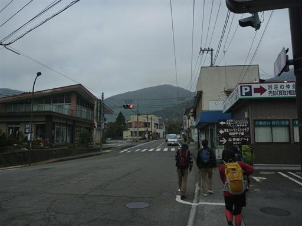
しばらく車道を歩くと登山道入口に到着する。
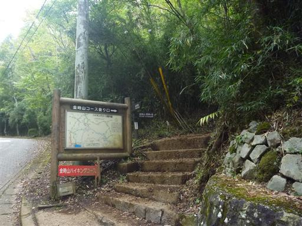
比較的歩きやすい登山道を登っていく。
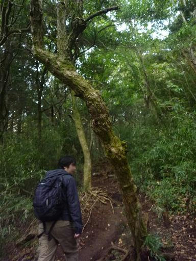
一登りで矢倉沢峠に到着。メンバーの一人が少し体調を崩したためここで小休止する。
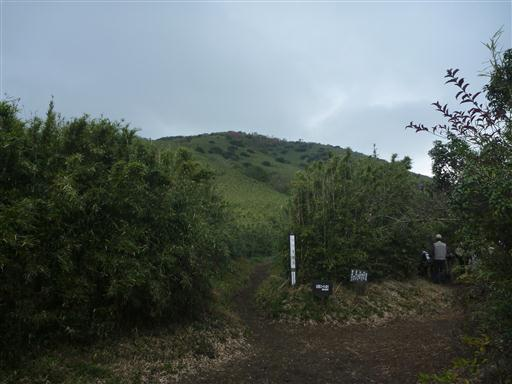
辺りは背の高い笹に覆われている。
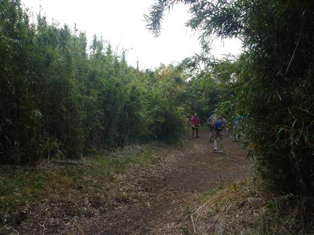
休憩をとったら少しペースを落としてゆっくり登り始める。
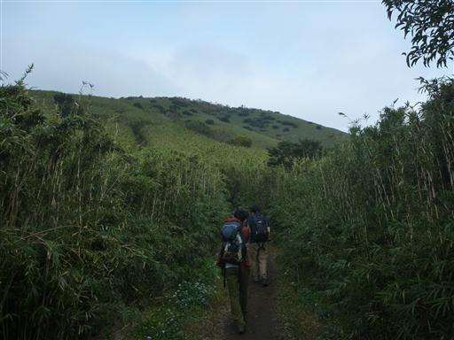
視界が開けた場所に出てくる。
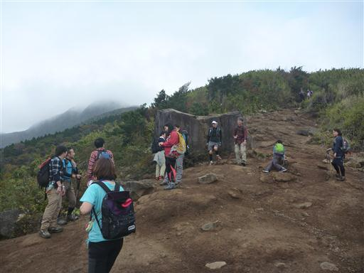
左手には箱根中心部の神山が見えている。
大涌谷だろうか？中腹から噴煙が上がっている。
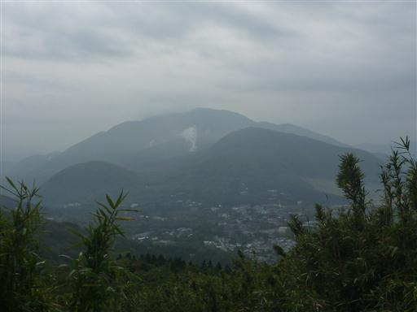
振り返ると笹原の中に一筋の登山道が見えている。
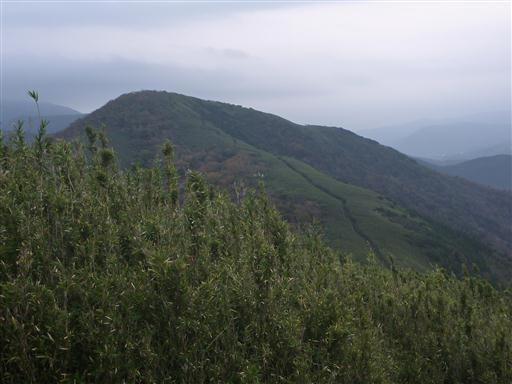
辺りは紅葉が始まっている。箱根の紅葉シーズンはこれからだ。

天気が回復することを期待していたが、逆に悪化している。
見えていた景色も見えなくなってきた。
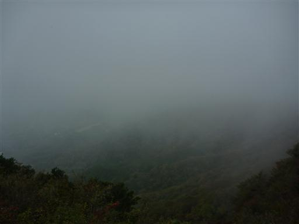
山頂に近づくと登山道が混雑してくる。
紅葉の時期の3連休の初日なので、混雑は覚悟のうえだ。
なぜか金時山には混雑する時期にばかり来ている。
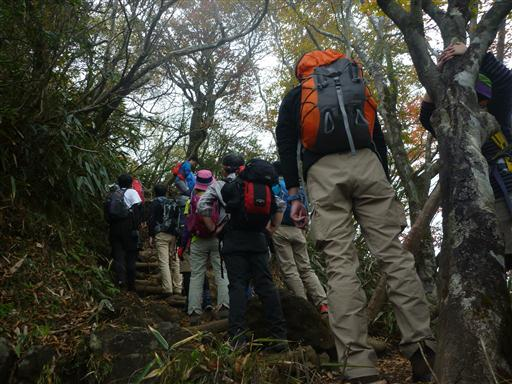
金時山山頂に到着する。標高1213m。
予想はしていたが、富士山の姿は全く見えない。
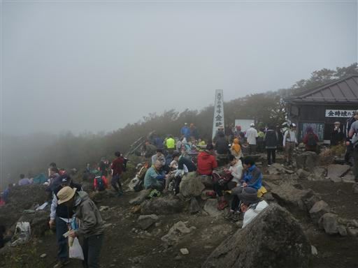
相変わらず山頂は混雑しているが、比較的山頂部が広いので助かる。
腰を下ろせるスペースは十分にあったので、そこに座って昼食をとる。
じっとしていると結構寒い。
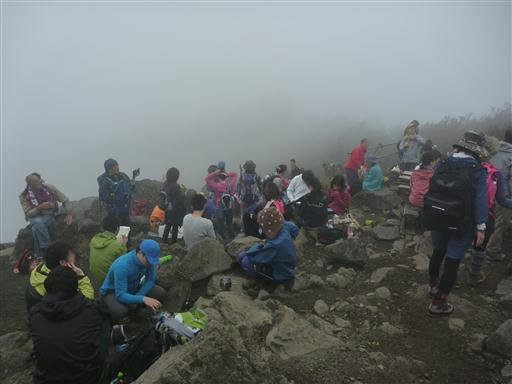
昼食をとったら早々に混雑する山頂を脱出する。この辺りはまだ雲に覆われている。
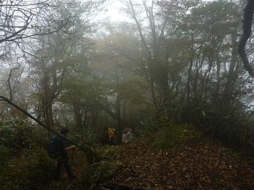
公時神社分岐に到着。
ここで登りに使った道と分かれて別の道に下って行く。
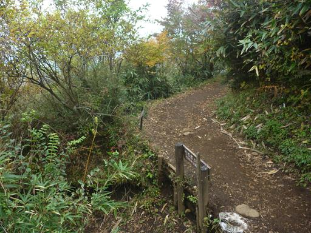
公時宿り石。2つに割れた大石だ。
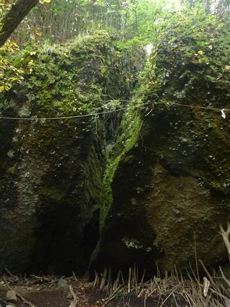
途中で林道を横断する。こんなところに林道が走っているとは知らなかった。
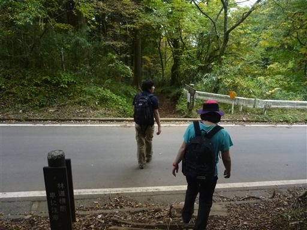
公時神社に下山する。
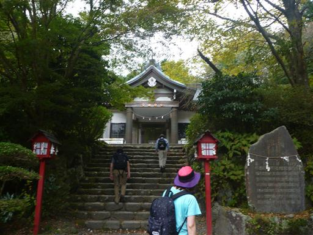
ここには石でできた大きなまさかりが置かれている。
岩に固定されているため動かすことはできない。
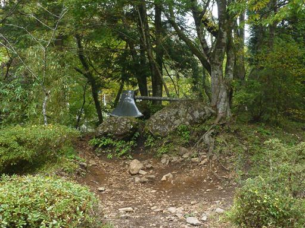
仙石バス停に戻ってくる。
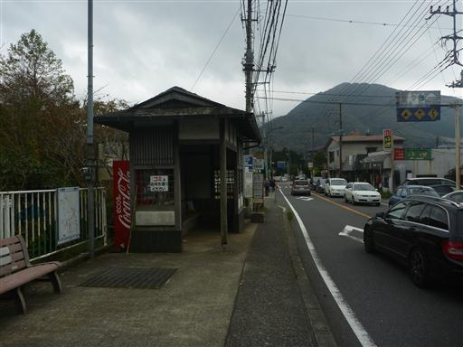
バスで強羅駅まで出て、箱根登山鉄道に乗る。
鉄道もケーブルカーも大勢の観光客で賑わっている。
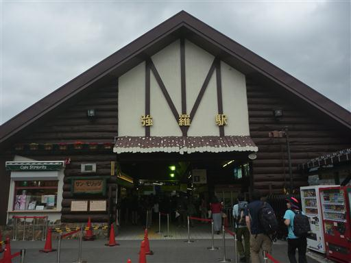
箱根湯本駅の一つ手前の塔ノ沢駅で下車し、温泉に行く。
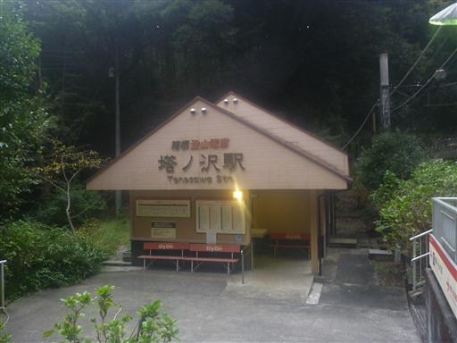
今回行ったのは箱根湯寮。
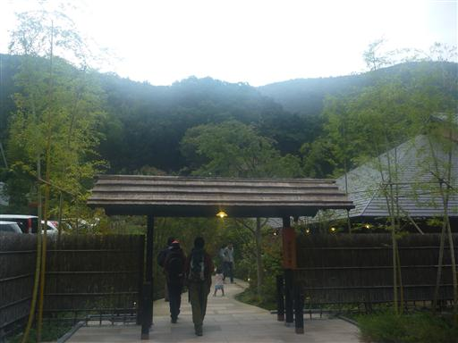
落ち着いた雰囲気の場所で、子供は入浴不可。
1300円と少々高いが、たまにはこういう温泉も良い。
天気は悪かったが久しぶりに子供から解放された登山だった。
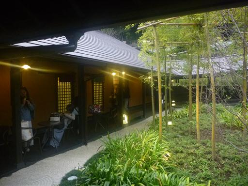